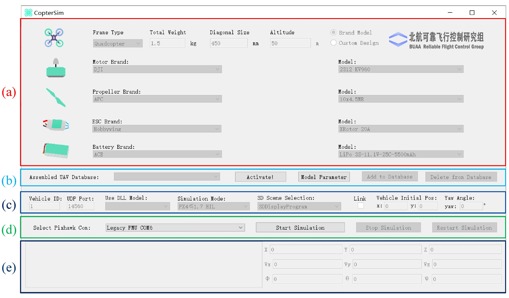
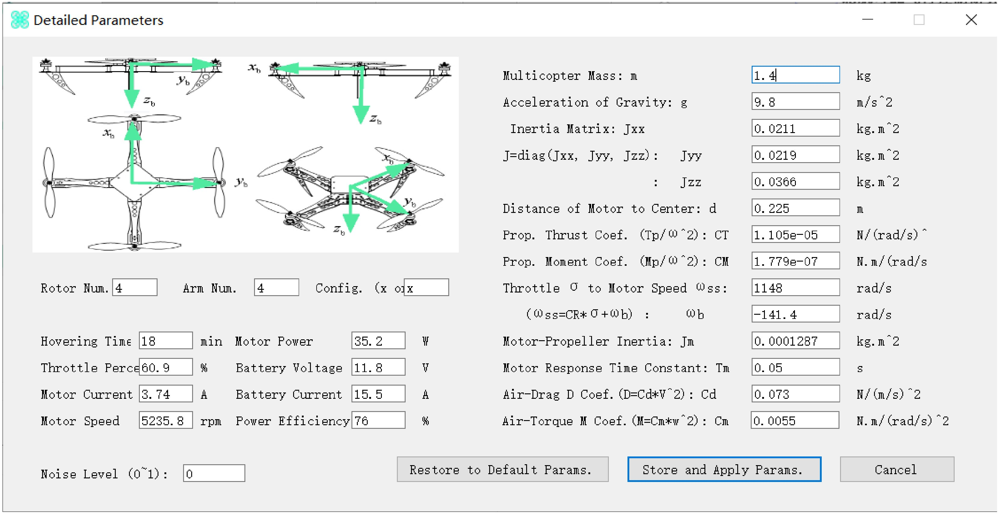
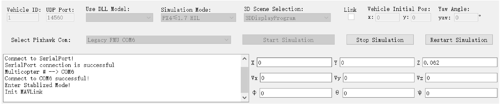
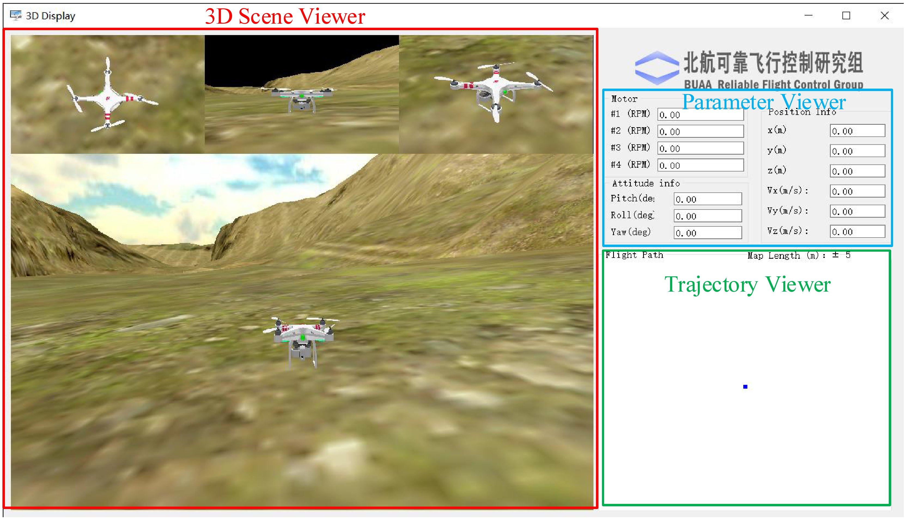
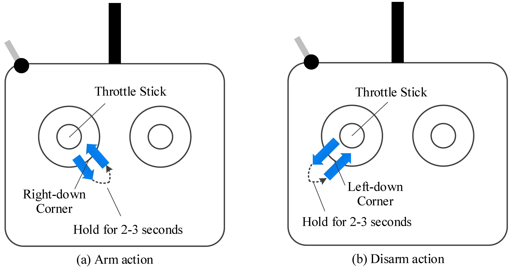

<!DOCTYPE html>
<html class="writer-html4" lang="en" >
<head>
  <meta charset="utf-8">
  
  <meta name="viewport" content="width=device-width, initial-scale=1.0">
  
  <title>5. HIL Simulation Platform &mdash; RflySimDoc 1.0 documentation</title>
  

  
  <link rel="stylesheet" href="../_static/css/theme.css" type="text/css" />
  <link rel="stylesheet" href="../_static/pygments.css" type="text/css" />

  
  
  
  

  
  <!--[if lt IE 9]>
    <script src="../_static/js/html5shiv.min.js"></script>
  <![endif]-->
  
    
      <script type="text/javascript" id="documentation_options" data-url_root="../" src="../_static/documentation_options.js"></script>
        <script type="text/javascript" src="../_static/jquery.js"></script>
        <script type="text/javascript" src="../_static/underscore.js"></script>
        <script type="text/javascript" src="../_static/doctools.js"></script>
        <script type="text/javascript" src="../_static/language_data.js"></script>
    
    <script type="text/javascript" src="../_static/js/theme.js"></script>

    
    <link rel="index" title="Index" href="../genindex.html" />
    <link rel="search" title="Search" href="../search.html" />
    <link rel="next" title="6. Examples" href="Examples.html" />
    <link rel="prev" title="4. Pixhawk Hardware System" href="PixhawkHardwareSystem.html" /> 
</head>

<body class="wy-body-for-nav">

   
  <div class="wy-grid-for-nav">
    
    <nav data-toggle="wy-nav-shift" class="wy-nav-side">
      <div class="wy-side-scroll">
        <div class="wy-side-nav-search" >
          

          
            <a href="../index.html" class="icon icon-home" alt="Documentation Home"> RflySimDoc
          

          
          </a>

          
            
            
          

          
<div role="search">
  <form id="rtd-search-form" class="wy-form" action="../search.html" method="get">
    <input type="text" name="q" placeholder="Search docs" />
    <input type="hidden" name="check_keywords" value="yes" />
    <input type="hidden" name="area" value="default" />
  </form>
</div>

          
        </div>

        
        <div class="wy-menu wy-menu-vertical" data-spy="affix" role="navigation" aria-label="main navigation">
          
            
            
              
            
            
              <p class="caption"><span class="caption-text">Introduction</span></p>
<ul>
<li class="toctree-l1"><a class="reference internal" href="../0_Start/WhatIsRflysim.html">1. What is RflySim</a></li>
<li class="toctree-l1"><a class="reference internal" href="../0_Start/GettingStarted.html">2. Getting Started</a></li>
</ul>
<p class="caption"><span class="caption-text">Modeling</span></p>
<ul>
<li class="toctree-l1"><a class="reference internal" href="../1_Modeling/Modeling.html">1. Modeling</a></li>
</ul>
<p class="caption"><span class="caption-text">Experimental Process</span></p>
<ul>
<li class="toctree-l1"><a class="reference internal" href="../2_Configuration/Introduction.html">1. Overall Introduction</a></li>
<li class="toctree-l1"><a class="reference internal" href="../2_Configuration/SoftwareInstallation.html">2. Software Package Installation</a></li>
<li class="toctree-l1"><a class="reference internal" href="../2_Configuration/HardwareConfiguration.html">3. Hardware Platform Configuration</a></li>
</ul>
<p class="caption"><span class="caption-text">Experimental Platform Usage:</span></p>
<ul class="current">
<li class="toctree-l1"><a class="reference internal" href="Introduction.html">1. Brief Introduction to Experimental Platforms</a></li>
<li class="toctree-l1"><a class="reference internal" href="ControllerDesignAndSimulationPlatform.html">2. Simulink-Based Controller Design and Simulation Platform</a></li>
<li class="toctree-l1"><a class="reference internal" href="PSPToolbox.html">3. PSP Toolbox</a></li>
<li class="toctree-l1"><a class="reference internal" href="PixhawkHardwareSystem.html">4. Pixhawk Hardware System</a></li>
<li class="toctree-l1 current"><a class="current reference internal" href="#">5. HIL Simulation Platform</a><ul>
<li class="toctree-l2"><a class="reference internal" href="#coptersim">5.1. CopterSim</a></li>
<li class="toctree-l2"><a class="reference internal" href="#ddisplay">5.2. 3DDisplay</a></li>
<li class="toctree-l2"><a class="reference internal" href="#flight-tests-with-hil-simulation-platform">5.3. Flight Tests with HIL Simulation Platform</a></li>
</ul>
</li>
<li class="toctree-l1"><a class="reference internal" href="Examples.html">6. Examples</a></li>
</ul>
<p class="caption"><span class="caption-text">RflySim Advanced Functions</span></p>
<ul>
<li class="toctree-l1"><a class="reference internal" href="../4_Pro/Advanced.html">1. Installation Method</a></li>
<li class="toctree-l1"><a class="reference internal" href="../4_Pro/BasicFeatures.html">2. Basic Features</a></li>
<li class="toctree-l1"><a class="reference internal" href="../4_Pro/OtherTypesofVehicles.html">3. Other Types of Vehicles</a></li>
<li class="toctree-l1"><a class="reference internal" href="../4_Pro/Customizationof3DScenarios.html">4. Customization of 3D Scenarios</a></li>
<li class="toctree-l1"><a class="reference internal" href="../4_Pro/UAVSwarmControl.html">5. UAV Swarm Control</a></li>
<li class="toctree-l1"><a class="reference internal" href="../4_Pro/UAVVisionAIControl.html">6. UAV Vision/AI Control</a></li>
<li class="toctree-l1"><a class="reference internal" href="../4_Pro/FuturePlan.html">7. Future Plan</a></li>
</ul>
<p class="caption"><span class="caption-text">Course</span></p>
<ul>
<li class="toctree-l1"><a class="reference internal" href="../5_Course/Book.html">1. Book</a></li>
<li class="toctree-l1"><a class="reference internal" href="../5_Course/CourseContent.html">2. Course Content</a></li>
</ul>
<p class="caption"><span class="caption-text">Download &amp; Support:</span></p>
<ul>
<li class="toctree-l1"><a class="reference internal" href="../7_DownloadAndSupport/DownloadAndSupport.html">1. Download</a></li>
<li class="toctree-l1"><a class="reference internal" href="../7_DownloadAndSupport/DownloadAndSupport.html#faq">2. FAQ</a></li>
<li class="toctree-l1"><a class="reference internal" href="../7_DownloadAndSupport/DownloadAndSupport.html#support">3. Support</a></li>
<li class="toctree-l1"><a class="reference internal" href="../7_DownloadAndSupport/DownloadAndSupport.html#reference">4. Reference</a></li>
</ul>

            
          
        </div>
        
      </div>
    </nav>

    <section data-toggle="wy-nav-shift" class="wy-nav-content-wrap">

      
      <nav class="wy-nav-top" aria-label="top navigation">
        
          <i data-toggle="wy-nav-top" class="fa fa-bars"></i>
          <a href="../index.html">RflySimDoc</a>
        
      </nav>


      <div class="wy-nav-content">
        
        <div class="rst-content">
        
          


<div role="navigation" aria-label="breadcrumbs navigation">

  <ul class="wy-breadcrumbs">
    
      <li><a href="../index.html" class="icon icon-home"></a> &raquo;</li>
        
      <li>5. HIL Simulation Platform</li>
    
    
      <li class="wy-breadcrumbs-aside">
        
            
            <a href="../_sources/3_Using/HILSimulator.rst.txt" rel="nofollow"> View page source</a>
          
        
      </li>
    
  </ul>

  
  <hr/>
</div>
          <div role="main" class="document" itemscope="itemscope" itemtype="http://schema.org/Article">
           <div itemprop="articleBody">
            
  <div class="section" id="hil-simulation-platform">
<h1>5. HIL Simulation Platform<a class="headerlink" href="#hil-simulation-platform" title="Permalink to this headline">¶</a></h1>
<p>The HIL simulation platform includes a Real-time Motion Simulation Software—
CopterSim and a 3D Visual Display Software—3DDisplay.</p>
<div class="section" id="coptersim">
<h2>5.1. CopterSim<a class="headerlink" href="#coptersim" title="Permalink to this headline">¶</a></h2>
<p>Double-click the CopterSim shortcut on the Windows desktop to open the CopterSim
software, whose UI is presented in Fig. 3.50. The default simulation model and
parameters are the same as for the Simulink multicopter model used in the SIL
simulation system (see Fig. 3.1). This is because the CopterSim is developed based on
the code generation technique with the Simulink multicopter model. CopterSim needs
to run on a 64-bit Windows computer platform with a serial port and a MicroUSB
cable to communicate with the Pixhawk autopilot (see Fig. 3.42).</p>
<div class="figure align-center" id="id2">

<p class="caption"><span class="caption-text">Fig. 3.50 CopterSim main UI</span></p>
</div>
<p>CopterSim sends sensor data to the Pixhawk autopilot, and then the autopilot
solves the motor PWM control signal and returns it to CopterSim. As a result, the
Pixhawk autopilot can perform real-time control on the simulated multicopter in
CopterSim, as well as control a real multicopter. Meanwhile, CopterSim will send
the attitude and position information of the multicopter to the local network through
the UDP protocol, and the 3DDisplay receives the multicopter flight information to
complete the corresponding real-time 3D scene display.</p>
<p>As shown in Fig. 3.50, the UI of CopterSim is divided into two parts. The upper
part, presented in Fig. 3.50a, is the input interface to design a multicopter by selecting
popular components on the market. The lower part presented in Figs. 3.50b–e is the
interface to connect with the autopilot for HIL simulation. Note that CopterSim
enables by default only the basic functions required by this book. Registration is
required to use many other practical functions, such as swarm simulation, high-
fidelity UE4 scenes, and HIL simulations for other aerial vehicles (e.g., fixed-wing
aircraft). Please, see Appendix A for more information.</p>
<p>Click the “Model Parameter” button in the middle of the CopterSim UI in
Fig. 3.50b. The model parameter configuration dialog in Fig. 3.51 will pop up; the
model parameters stored in the previous simulation will be displayed here. The
parameter dialog in Fig. 3.51 mainly includes two parts: the hover information (hover
endurance, throttle, output power, motor speed, etc.) and the basic multicopter
parameters (total mass, the moment of inertia, size, thrust coefficient, and drag coefficient).
Clicking the “Restore to Default Params” button on the dialog in Fig. 3.51 will restore
the model parameters to the default values; clicking the “Save and Apply Params”
button will store the current parameters to the database for subsequent HIL simulations.</p>
<div class="figure align-center" id="id3">

<p class="caption"><span class="caption-text">Fig. 3.51 Model parameter configuration dialog</span></p>
</div>
<p>CopterSim also allows readers to directly modify the model parameters on the
right page of Fig. 3.51. For example, enter the same parameters as the multicopter
model used in Simulink SIL simulations (the parameters are stored in file
“e01.SoftwareSimExpsiconInit.m”). Then, click the “Store and Apply parameters”
button in Fig. 3.51 to store and apply the model parameters. The “noise level
(0–1)” in Fig. 3.51 allows selecting the noise level of the simulated sensors, where
“0” denotes that the sensor noise is not enabled, and “1” denotes that the noise level
is consistent with the real Pixhawk autopilot. A noise level between 0–1 or larger
than one can also be selected to represent the noise level of actual sensors. This
enables the possibility of testing the anti-interference ability of the designed control
algorithms.</p>
<p>After the multicopter parameters and the noise level are configured, as shown in
Fig. 3.51, connect the Pixhawk autopilot with the computer. A few seconds later, the
serial port of the Pixhawk autopilot will be listed in the “Select Pixhawk Com”
dropdown menu. Select the Pixhawk serial port (usually described by the text “FMU”),
and click the “Start Simulation” button to start the HIL simulation. As shown in
Fig. 3.52, the messages from the Pixhawk are printed on the CopterSim UI, which
indicates that the HIL simulation is running correctly. During the HIL simulation
process, clicking the “Stop Simulation” button will stop the HIL simulation, and
clicking the “Restart Simulation” will re-initialize the multicopter position and states
to their initial values.</p>
<div class="figure align-center" id="id4">

<p class="caption"><span class="caption-text">Fig. 3.52 HIL simulation with CopterSim</span></p>
</div>
</div>
<div class="section" id="ddisplay">
<h2>5.2. 3DDisplay<a class="headerlink" href="#ddisplay" title="Permalink to this headline">¶</a></h2>
<p>Double-click the 3DDisplay shortcut on the Windows desktop to open the 3DDisplay
software. As shown in Fig. 3.53, the “3D Scene Viewer” on the left side of the
3DDisplay UI presents the current flight status of the multicopter in the 3D scene.
The basic flight parameters are displayed in the upper right window of the 3DDisplay
UI, including motor speed, position, and attitude information. The flight trajectory
of the multicopter is displayed on the lower right window of the 3DDisplay UI.</p>
<div class="figure align-center" id="id5">

<p class="caption"><span class="caption-text">Fig. 3.53 User interface of 3DDisplay</span></p>
</div>
</div>
<div class="section" id="flight-tests-with-hil-simulation-platform">
<h2>5.3. Flight Tests with HIL Simulation Platform<a class="headerlink" href="#flight-tests-with-hil-simulation-platform" title="Permalink to this headline">¶</a></h2>
<p>In the HIL simulation platform, when controlling a real multicopter, it is convenient
to control the simulated multicopter with a real RC transmitter to perform basic
actions, such as arming, taking off, manual flight, landing, etc. The detailed steps are
described next.</p>
<p>(1). Push up the POWER switch to turn on the RC transmitter.</p>
<p>(2). Correctly connect the computer with the Pixhawk hardware system (including
the Pixhawk autopilot and the RC receiver) and start the HIL simulation in
CopterSim according to the procedure mentioned above.</p>
<p>(3). As shown in Fig. 3.54a, arm the Pixhawk autopilot by moving the left-hand
stick on the RC transmitter (CH3) to the lower-right corner for 2–3 s.</p>
<blockquote>
<div><div class="figure align-center" id="id6">

<p class="caption"><span class="caption-text">Fig. 3.54 Arm and disarm of Pixhawk autopilot through RC transmitter</span></p>
</div>
</div></blockquote>
<p>(4). Pixhawk is successfully armed when its LED turns from slow flashing to always
on, <a class="footnote-reference" href="#f1" id="id1">[1]</a> and the CopterSim print message “Detect Px4 Armed” is received from
Pixhawk. If arming Pixhawk fails, please disconnect all hardware and software
and repeat the above steps.</p>
<p>(5). Pull up the left-hand stick on the RC transmitter (CH3) for the multicopter to
take off and fly up to a certain altitude. Next, vertically move the left-hand stick
to verify the vertical motion control of the multicopter.</p>
<p>(6). Horizontally move the left-hand stick on the RC transmitter (CH4) to verify
the yaw angle motion control of the multicopter.</p>
<p>(7). Vertically move the right-hand stick on the RC transmitter (CH2) to verify the
pitch angle control as well as the forward and backward motion control of the
multicopter.</p>
<p>(8). Horizontally move the right-hand stick on the RC transmitter (CH1) to verify the
roll angle control as well as the left and right motion control of the multicopter.</p>
<p>(9). Change the position of the top-right switch on the RC transmitter (CH6) to
verify the mode switching control of the multicopter.</p>
<p>(10). Pull down the left-hand stick on the RC transmitter (CH3) to land the
multicopter to ground.</p>
<p>(11). As shown in Fig. 3.54b, move the left-hand stick on the RC transmitter (CH3)
to the lower-left corner for 2–3 s to disarm the Pixhawk.</p>
<p>(12). Click the “Stop Simulation” button on the CopterSim UI to stop the HIL
simulation. Then, disconnect all software and hardware connections between the
computer and Pixhawk.</p>
<p class="rubric">Notes</p>
<table class="docutils footnote" frame="void" id="f1" rules="none">
<colgroup><col class="label" /><col /></colgroup>
<tbody valign="top">
<tr><td class="label"><a class="fn-backref" href="#id1">[1]</a></td><td>Higher Pixhawk hardware (e.g., Pixhawk 2/3/4/5) starts to discard LED module, so an external I2C LED module is required to observe the lighting effect.</td></tr>
</tbody>
</table>
</div>
</div>


           </div>
           
          </div>
          <footer>
  
    <div class="rst-footer-buttons" role="navigation" aria-label="footer navigation">
      
        <a href="Examples.html" class="btn btn-neutral float-right" title="6. Examples" accesskey="n" rel="next">Next <span class="fa fa-arrow-circle-right"></span></a>
      
      
        <a href="PixhawkHardwareSystem.html" class="btn btn-neutral float-left" title="4. Pixhawk Hardware System" accesskey="p" rel="prev"><span class="fa fa-arrow-circle-left"></span> Previous</a>
      
    </div>
  

  <hr/>

  <div role="contentinfo">
    <p>
        
        &copy; Copyright 2020, Rfly

    </p>
  </div>
    
    
    
    Built with <a href="http://sphinx-doc.org/">Sphinx</a> using a
    
    <a href="https://github.com/rtfd/sphinx_rtd_theme">theme</a>
    
    provided by <a href="https://readthedocs.org">Read the Docs</a>. 

</footer>

        </div>
      </div>

    </section>

  </div>
  

  <script type="text/javascript">
      jQuery(function () {
          SphinxRtdTheme.Navigation.enable(true);
      });
  </script>

  
  
    
   

</body>
</html>